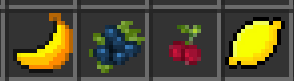

Fruits!
Fruits! Nice, healthy, and can be used for more food recipies. You might recognise some of these from previous updates.
Banana
Bananas, they come from Acacia Trees. This fruit and all other fruits have the same drop rate as Apples do to Oak Trees.
Blueberry
Blueberries! These come from Spruce Trees. Not much to say about these yet as they can't be used for any Drinks.
Cherry
In the same boat as the blueberries in terms of functionality, they come from Dark Oak Trees and are still edible none the less.
Lemon
Lemon! They come from Birch Trees. It can be used to make Lemonade!